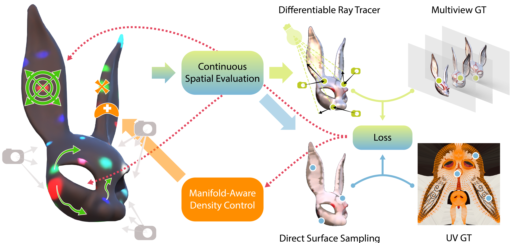
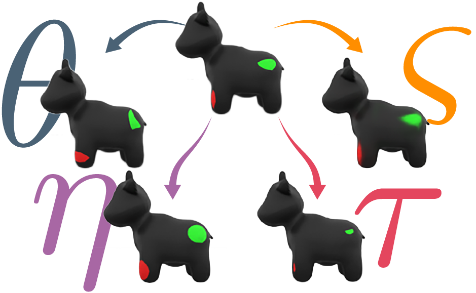

HKTex
Heat Kernel Textures (HKTex) is an intrinsic, UV-free texture representation where anisotropic heat kernels act as geodesic equivalents to Gaussians that natively conform to mesh geometry. Given a mesh, a set of known cameras, and an initialisation of our heat kernels, we continuously evaluate our representation, and render it differentiably with a Mitsuba based ray tracer. Rendered pixels are compared with the corresponding pixels in the mutliview GT images. Our method can also fit existing UV textures by directly evaluating the texture at arbitrary surface locations and comparing against corresponding UV values. The loss is then backpropagated to update the shape parameters of our kernels as well as their positions which are forced to remain on the surface.

Kernel Modulation
Each heat kernel is defined directly on the surface and parametrised by its source position, diffusion angle and anisotropy (controlling orientation and stretch), scale, sharpness, and RGB colour.

Optimization & Density Control
Kernel positions are updated along the surface using Riemannian Gradient Descent with momentum (made possible only thanks to digeo). In tandem, manifold-aware controllers prune inactive kernels and dynamically densify under-reconstructed regions by cloning or splitting kernels along their principal axes on the manifold.